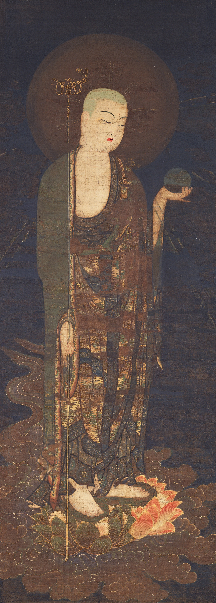
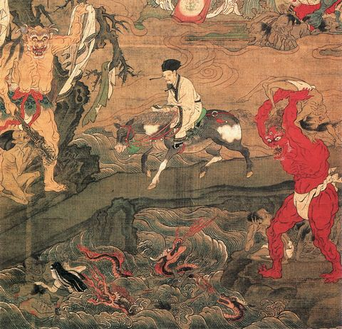
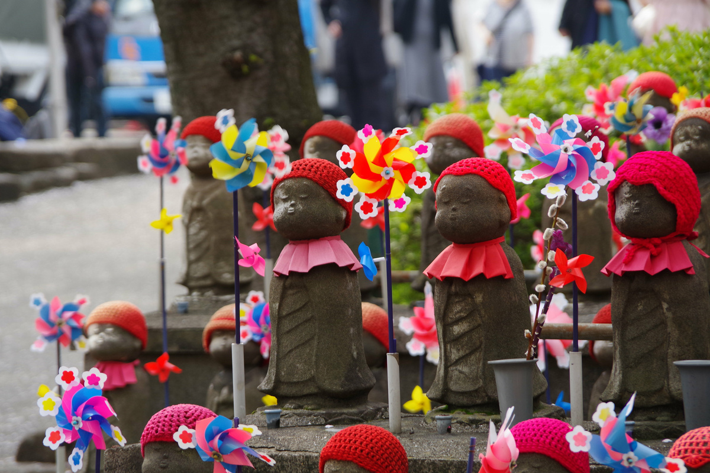

C’è chi si trova molto a suo agio nei cimiteri: ambienti calmi, riparati, silenziosi, rispettosi, dove il gesto rituale accompagna la memoria, il lutto o il sereno ricordo. Personalmente sono luoghi che apprezzo e spesso visito. Una volta sola mi sono sentito completamente a disagio: mi trovavo in Giappone, a Kobe. Non ricordo il nome del tempio, ma ricordo un cimitero addossato a una collina, le varie lapidi e statue in pietra che seguivano una stradina in pendenza. A un certo punto, sulla mia destra si apriva una grotta scavata nella parete rocciosa della collina. Al suo interno, buio: solo la fiamma di alcune candele permetteva, strizzando gli occhi, di muoversi senza inciampare sul pavimento naturale. Oltre a me, l’unico altro ospite era una ragazza che non avrà avuto più di 25 anni, che recitava sottovoce delle preghiere di fronte a una piccola statua del bodhisattva Jizō 地蔵.
In brevissimo tempo, sentii subito il bisogno di uscire a riprendere aria e luce del sole. Senza saperlo ero finito all’interno di un’area del tempio dedicata a dei defunti speciali: quelli mai nati. Il termine mizuko 水子, letteralmente “bambini d’acqua”, indica i feti abortiti, e quello era il loro luogo di riposo. È un’immagine che affonda le radici in una cosmologia dove la vita è un processo di lenta solidificazione: il feto è acqua perché non ha ancora una forma umana definita, è un’esistenza fluida che non è ancora approdata stabilmente nel mondo dei vivi.
Corpi sotto assedio
Il mizuko kuyō 水子供養, il servizio funebre per i feti abortiti, è uno sviluppo molto recente del Buddhismo giapponese. Una prima inquietudine nei confronti delle morti di feti e neonati iniziò a svilupparsi solo in epoca premoderna, ma prese veramente piede solo in età contemporanea. Fino in epoca premoderna, infatti, l’aborto non necessitava di un contesto sociale per essere metabolizzato, anzi. Il termine mabiki 間引き, letteralmente “sfoltire” (ad esempio, una piantina di riso), veniva infatti usato per indicare aborti e infanticidi accettati dalla collettività.1 D’altronde l’interruzione della gravidanza, o il diretto liberarsi del neonato, erano gli unici strumenti di controllo della popolazione in un Giappone agricolo, in cui la sopravvivenza delle famiglie dipendeva in parte dal numero di bocche da sfamare.

Una prima evidenza storica di interesse verso l’argomento si ha solo a fine Settecento, quando Matsudaira Sadanobu 松平 定信 (1759-1829), un importante daimyō dell’area di Shirakawa, fece erigere una stele commemorativa dedicata a diecimila feti e neonati nel cortile del tempio Ekō-in 回向院 a Edo, odierna Tokyo.2 Tuttavia, fino a tempi molto recenti, il tema dell’aborto non era parte integrante del dibattito pubblico giapponese, e difficilmente si sollevavano questioni morali a riguardo.
È solo a partire dagli anni ‘50 che la questione iniziò a diffondersi. Due le cause principali: da un lato la diffusione di una «struttura famigliare post-bellica («kazoku no sengo taisei 家族の戦後体制»),3 con le donne sempre più dedicate alle faccende casalinghe e, soprattutto, ai figli; dall’altro la legalizzazione dell’aborto, avvenuta nel 1948. Queste due dinamiche creavano un contesto che rendeva abortire in un ambiente sicuro come l’ospedale accessibile, ma che al contempo assegnava alle donne il ruolo principale di madri. Le donne perdevano un duplice controllo sul loro corpo. Nelle strutture mediche asettiche, le donne avevano perso il controllo su pratiche un tempo gestite in ambito domestico e comunitario. Un paradosso che persiste ancora oggi: in Giappone l’aborto richiede per legge il consenso scritto del partner,4 rendendo l'autodeterminazione sul proprio corpo un diritto mediato da un'autorità maschile, medica o legale.

Nella società, le donne cedevano la loro libertà sessuale per diventare incubatrici di nuova vita. Questa situazione diventò la base per instillare dall’esterno un senso di colpa riguardo all’aborto. I mass media fecero il resto, grazie a imponenti campagne di “sensibilizzazione” pro-vita, e contribuendo a normalizzare il paragone aborto / omicidio.5
Fu così che, a partire dagli anni ‘70, iniziò a diffondersi una ritualità funebre per i feti abortiti, il mizuko kuyō.
Jizō, guardiano di anime liquide
Se vogliamo, a posteriori, trovare un aggancio alla tradizione buddhista giapponese, lo possiamo trovare nella figura del bodhisattva Jizō (sanscrito: Kṣitigarbha). Nelle prime fonti a nostra disposizione, Jizō ci viene descritto come il bodhisattva che vigila sui Sei Regni delle rinascite, aiutando l’individuo nell’aldilà a trovare la corretta strada verso la reincarnazione.6 Per questo ruolo di guida, non di rado le sue statue venivano poste lungo le strade, agli incroci, al confine del villaggio. A partire dal X secolo circa, Jizō venne posto a guardiano di una sorta di “limbo” buddhista: il sai no kawara 賽の河原, luogo intermedio tra il regno dei vivi e quello dei morti. Il suo compito qui era quello di psicopompo, accompagnatore dei defunti nell’attraversamento del ponte tra il regno dei vivi e quello dei morti.7
Dal XV-XVI secolo, nelle narrazioni su questo limbo iniziarono a comparire dei bambini.8 Secondo la tradizione, gli spiriti degli infanti morti si raggruppano sulle rive del fiume che scorre nel limbo, a giocare a costruire delle torri di sassolini, riproduzioni degli stūpa buddhisti. Tuttavia, i demoni che governano quelle terre dell’Aldilà, prontamente arrivano a distruggere le loro torri, così che i bambini si ritrovavano a dover ricominciare ogni volta da capo il loro gioco infinito.

Rimanere bloccati dai demoni in questo ciclo era un rischio enorme: la rinascita veniva impedita, e si rischiava di diventare dei morti inquieti, dei fantasmi. Queste anime tormentate sarebbero tornate tra i vivi, tra i loro famigliari, a tormentarli con la loro vendetta, tatari 祟り. Sebbene il folklore antico parlasse di una generica malinconia dei defunti, l'industria religiosa moderna ha trasformato questa paura in una minaccia concreta: si imputano malattie, fallimenti economici o incidenti domestici proprio alla “vendetta” di questi feti non debitamente commemorati.
Fu proprio questa necessità di aiutare i bambini intrappolati nel sai no kawara, nel limbo, ad accostare la figura del bodhisattva Jizō, già guardiano di quel posto, a quella dei bambini. Questo legame è oggi fortissimo all’interno dei riti funebri per i feti abortiti.
L’industria del rimorso
Business funebre
Il mizuko kuyō non è solo un rituale: è un settore economico che ha salvato molti templi dalla bancarotta nel dopoguerra. I costi per una singola statuetta di Jizō da esporre nel recinto del tempio possono variare dai 10.000 agli oltre 100.000 yen (più di 500 euro), a cui vanno aggiunte le spese per la cerimonia annuale, le offerte costanti e l'acquisto del kaimyō (il nome postumo).
Come si svolge questo rito, e in che modo è presente nella vita delle persone? Alcuni dettagli possono variare da un tempio all’altro, ma sono diversi gli elementi trasversali. Al posto di una lapide, viene venduta una statuetta di Jizō, posta nel giardino del tempio o in una parte dedicata del cimitero. Al feto viene assegnato un kaimyō 戒名, un nome postumo, alla stregua degli altri defunti. Alla statuetta vengono posti un berrettino e un bavaglino rosso, colore che tradizionalmente serve a scacciare i demoni, e offerti biberon, peluches e girandole.9
L’effetto visivo è straniante: i templi creano dei macabri “parchi giochi” di pietra che, pur simulando una cura materna, servono a rendere eterna e visibile una perdita che la società impone di espiare pubblicamente. Il senso è quello di ricostruire l’ambiente in cui il bambino avrebbe vissuto se fosse nato, per placare il suo spirito vagante nel limbo. Una brava madre, infine, si recherà almeno un paio di volte al mese a pregare di fronte a Jizō, ponendo cura e attenzione nell’ordine e nella pulizia, oltre a rinnovare le varie offerte.

Questa pratica è, com’è immaginabile, non poco discussa. Da un lato, alcuni studiosi hanno evidenziato un aspetto positivo del mizuko kuyō, il quale fornisce uno strumento per elaborare un lutto che, altrimenti, resta spesso privato e nascosto agli occhi della società.10 Tuttavia, una parte consistente di accademici è d’accordo sulla natura problematica di una pratica rituale dedicata a feti abortiti.11 La leva sul senso di colpa è evidente. Doversi confrontare periodicamente con il ricordo di un evento circondato da un enorme stigma sociale come l’aborto rende viva la presenza del feto, e quindi vivida la propria colpevolezza per la sua assenza.
La responsabilità dell’aborto viene fatta quindi ricadere interamente sulla figura femminile. Nonostante l'aborto sia spesso una scelta condivisa, meno di un 10% delle donne si reca al tempio accompagnata dal partner:12 il rito sancisce una separazione netta tra il “fare” l'aborto (condiviso) e il “pagare”, economicamente e moralmente, per lo stesso (solo della donna). Il mizuko kuyō diventa così una tassa di genere sul rimorso. Se quindi su un piano clinico la responsabilità della scelta viene condivisa, sul piano religioso ricade completamente sulle donne.
Già negli anni '80 il medico e attivista Tenrei Ōta 典礼 太田 (1900-1985), che si batté a lungo per la depenalizzazione dell'aborto, denunciava la crudeltà di questo sistema:
«Le donne, una volta abortito, dovrebbero avere la libertà di dimenticare e andare avanti con la loro vita. E invece vengono costrette a mantenere la ferita costantemente aperta: una cosa estremamente crudele e disumana.»13
Ripensando a quella ragazza di fronte al Jizō, ci si può chiedere se quel rito le stesse veramente offrendo una via d'uscita dal dolore. O se, al contrario, la stesse incatenando a un rimorso costruito a tavolino da un sistema che ha bisogno del senso di colpa delle donne per alimentare i propri incensi.